UM OLHAR SOBRE PERMANÊNCIA E EVASÃO ESCOLAR NO IFPR - CAMPUS JACAREZINHO
Autoria
Thiago Cabral Facco
Orientador
Prof. Dr. Jonis Jecks Nervis
Instituição
Universidade Estadual do Norte do Paraná Centro de Ciências Humanas e da Educação Programa de Pós-Graduação em Educação Mestrado Profissional em Educação Básica
Ano
2026
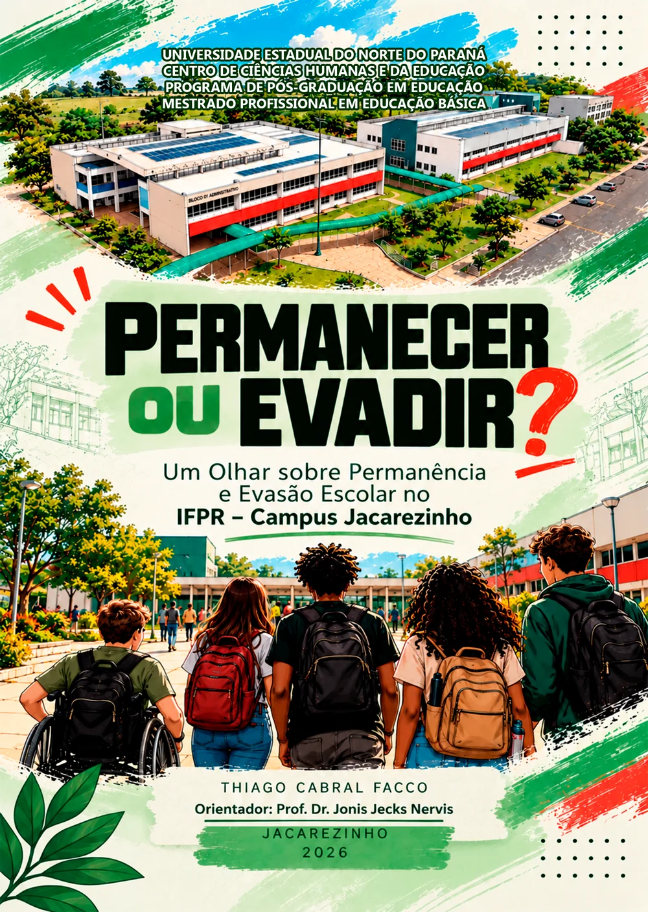
Produto Educacional Interativo sobre permanência e evasão escolar, derivado da pesquisa intitulada “INVESTIGAÇÃO DAS TENSÕES ENTRE PERMANECER OU EVADIR NA TRAJETÓRIA ESCOLAR DE ESTUDANTES QUE INGRESSAM NO ENSINO MÉDIO INTEGRADO DO INSTITUTO FEDERAL DO PARANÁ - CAMPUS JACAREZINHO”, desenvolvida no Mestrado Profissional em Educação Básica do Programa de Pós-Graduação em Educação, vinculado ao Centro de Ciências Humanas e da Educação da Universidade Estadual do Norte do Paraná, na linha de pesquisa Práticas Docentes para a Educação Básica.
Direcionado especialmente a gestores e docentes, o material reúne fundamentos teóricos, dados institucionais, ações desenvolvidas e possibilidades de enfrentamento da evasão e fortalecimento da permanência estudantil.
PARA QUEM É
O Produto Educacional destina-se a gestores, docentes, pesquisadores e demais interessados na temática da permanência e da evasão escolar no IFPR - Campus Jacarezinho.
O QUE VOCÊ ENCONTRA
Fundamentos sobre permanência e evasão escolar, dados e indicadores do IFPR - Campus Jacarezinho, Painel Analítico Interativo, resultados da pesquisa e ações e estratégias voltadas à promoção da permanência e à prevenção da evasão.
COMO NAVEGAR
Escolha um capítulo no sumário ou avance pelos botões no fim de cada página.
2
Capítulo 2 de 11
SOBRE O PRODUTO EDUCACIONAL E O AUTOR
Esta seção apresenta a trajetória do autor na educação pública e explica como seu encontro com o Instituto Federal do Paraná despertou as inquietações que motivaram a pesquisa e este material.
A escola pública como origem
Toda a minha formação básica aconteceu na escola pública. Cresci em um bairro periférico de Curitiba e tive professores, gestores e, principalmente, uma família que criou condições para que a educação ocupasse um lugar importante em minha vida.
Sou resultado da escola e da educação pública.
Da formação à docência
Anos depois, já formado em Matemática e atuando como professor, passei a perceber alguns dos desafios vivenciados cotidianamente pelas escolas, pelos profissionais da educação e, especialmente, pelos estudantes.
2014— ENCONTRO COM O IFPR
Em 2014, minha trajetória encontrou o Instituto Federal do Paraná. O primeiro contato foi marcado pelo encantamento. Professores qualificados, projetos, aulas experimentais, tecnologias e uma estrutura que me fizeram pensar em como teria sido minha própria experiência escolar se tivesse encontrado condições semelhantes durante a infância e a juventude.
Mas uma questão começou a me inquietar.
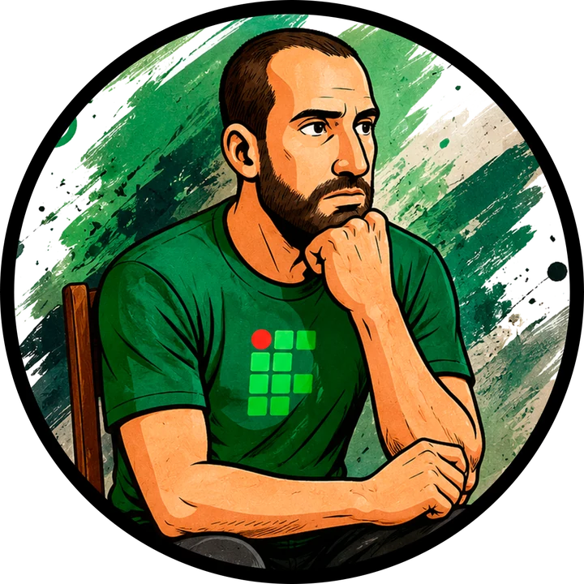
A pergunta que motivou a pesquisa
À medida que conhecia melhor a instituição, seus profissionais, estudantes e dados, uma realidade tornou-se cada vez mais presente: a evasão escolar.
Como uma instituição com uma proposta educacional que tanto me encantava e que ampliava oportunidades de acesso a uma educação pública de qualidade poderia, ao mesmo tempo, enfrentar dificuldades para garantir a permanência de seus estudantes?
Da inquietação à pesquisa
Foi dessa aparente contradição que surgiram as inquietações que motivaram a pesquisa desenvolvida no Programa de Pós-Graduação em Educação — Mestrado Profissional em Educação Básica da Universidade Estadual do Norte do Paraná. Desse processo de investigação nasceu o Produto Educacional aqui apresentado, intitulado:
PERMANECER OU EVADIR: UM OLHAR SOBRE A EVASÃO ESCOLAR E PERMANÊNCIA NO IFPR — CAMPUS JACAREZINHO
Síntese do percurso
ENCANTAMENTO
INQUIETAÇÃO
PESQUISA
3
Capítulo 3 de 11
INTRODUÇÃO
Entre ingressar e concluir
Falar sobre o direito à educação significa olhar para além das possibilidades de ingresso. Significa também perguntar quais condições os estudantes encontram para permanecer, aprender e concluir suas trajetórias escolares.
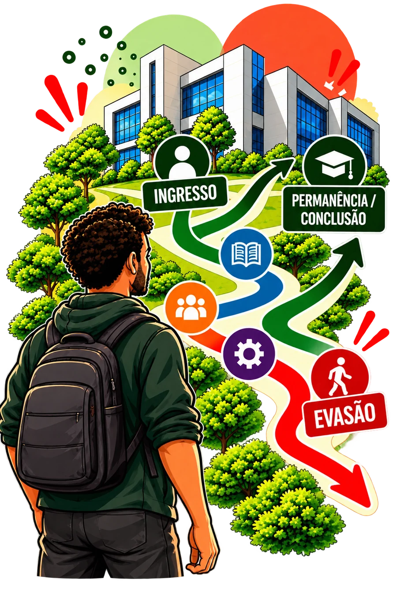
Entre a entrada em uma instituição e a conclusão de um curso existe um percurso que nem sempre acontece de maneira linear. Expectativas construídas antes do ingresso, experiências de adaptação, relações com colegas e professores, dificuldades acadêmicas, condições pessoais, familiares e socioeconômicas e características da própria instituição podem se encontrar e assumir diferentes significados ao longo dessa trajetória.
É nesse percurso que permanência e evasão deixam de representar apenas números registrados nos sistemas acadêmicos e passam a revelar experiências vivenciadas por estudantes.
O que acontece entre o ingresso de um estudante e a conclusão ou interrupção de sua trajetória?
Essa pergunta ganha especial importância na Educação Profissional e Tecnológica. A expansão da Rede Federal ampliou e interiorizou oportunidades de acesso à educação pública federal. Entretanto, ampliar as possibilidades de ingresso não significa, necessariamente, assegurar que todos os estudantes consigam permanecer até a conclusão de seus cursos.
QUANDO OS NÚMEROS REVELAM UM DESAFIO
No IFPR Campus Jacarezinho, contexto em que a pesquisa foi desenvolvida, os dados tornam essa discussão particularmente significativa. Entre as trajetórias já encerradas dos estudantes dos cursos de Ensino Médio Integrado analisadas, foram identificados praticamente tantos registros de evasão quanto de conclusão.
1.415 trajetórias encerradas
717concluíram
698evadiram
50,7%49,3%
Conclusão: 717 trajetórias, aproximadamente 50,7%.
Evasão: 698 trajetórias, aproximadamente 49,3%.
49,3% das 1.415 trajetórias encerradas analisadas correspondem a situações de evasão.
Dados referentes aos estudantes dos cursos de Ensino Médio Integrado do IFPR Campus Jacarezinho.
Os números ajudam a dimensionar o problema, mas não explicam, sozinhos, por que essas trajetórias foram interrompidas.
Dois olhares sobre as trajetórias
Por isso, a pesquisa voltou seu olhar para as experiências dos sujeitos que vivenciaram ou acompanharam esses percursos. Foram aproximadas duas perspectivas: a de estudantes que ingressaram no Ensino Médio Integrado e não concluíram seus cursos e a de docentes que, além da atuação em sala de aula, possuem ou possuíram experiências relacionadas à gestão da instituição.
ESTUDANTES EVADIDOS
Como percebem sua trajetória e os fatores relacionados à permanência e à evasão?
DOCENTES
Como percebem esses mesmos fatores a partir de suas experiências na docência e na gestão?
Onde esses olhares se aproximam? Onde divergem? E o que eles podem nos ensinar sobre as trajetórias estudantis?
DA PESQUISA À REFLEXÃO E À AÇÃO
Este material nasce das inquietações, dos dados e das experiências encontradas ao longo da pesquisa. Mais do que apresentar resultados, buscamos transformar os conhecimentos produzidos durante a investigação em um recurso que possa contribuir para compreender a permanência e a evasão e estimular reflexões sobre possibilidades de atuação no contexto educacional.
Ao longo deste material, percorreremos alguns dos fundamentos que ajudam a compreender a Educação Profissional e Tecnológica, conheceremos mais de perto o IFPR Campus Jacarezinho e discutiremos fatores relacionados às trajetórias de permanência e evasão identificados na pesquisa.
NOSSO PERCURSO
1Educação Profissional
2Rede Federal e IFPR Campus Jacarezinho
3Permanência e Evasão
4Dados do Campus
5Olhares de Estudantes e Docentes
6Ações e Caminhos Possíveis
PAINEL ANALÍTICO
O material também incorpora um PAINEL ANALÍTICO, construído para permitir a exploração de dados históricos do Campus Jacarezinho relacionados ao ingresso, à permanência, à conclusão e à evasão. Mais do que oferecer respostas prontas, o painel possibilita observar os dados por diferentes perspectivas e formular novas perguntas sobre as trajetórias dos estudantes.
Ao lado dos dados e dos resultados da pesquisa, serão apresentadas ações já desenvolvidas institucionalmente e possibilidades que podem contribuir para a promoção da permanência e para a prevenção da evasão. Essas possibilidades não constituem receitas ou soluções universais. Cada instituição possui características, sujeitos e contextos próprios que precisam ser considerados.
Não existe uma solução única para a evasão escolar.
Promover a permanência exige observar continuamente as trajetórias dos estudantes, compreender diferentes realidades e construir respostas capazes de acompanhar as transformações da instituição e de seus sujeitos.
4
Capítulo 4 de 11
DA EDUCAÇÃO PROFISSIONAL À REDE FEDERAL: UM OLHAR SOBRE O IFPR CAMPUS JACAREZINHO
UMA HISTÓRIA MARCADA POR TRANSFORMAÇÕES
1909Escolas de Aprendizes Artífices
1942Escolas Industriais e Técnicas
1959Escolas Técnicas Federais
1978Primeiros CEFETs
1997Decreto nº 2.208
2004Decreto nº 5.154
2008Criação dos Institutos Federais
Transformação institucionalMarco legal
A história da Educação Profissional e Tecnológica (EPT) no Brasil começou muito antes da criação dos Institutos Federais. Um de seus principais marcos ocorreu em 1909, quando foram criadas 19 Escolas de Aprendizes Artífices, destinadas à oferta gratuita de ensino primário e formação profissional para jovens das camadas populares (Frigotto et al., 2018; Silva, 2025).
Ao longo do século XX, essas instituições passaram por sucessivas transformações. Em 1942, tornaram-se Escolas Industriais e Técnicas; em 1959, passaram à condição de autarquias e receberam a denominação de Escolas Técnicas Federais. Posteriormente, parte dessas instituições foi transformada em Centros Federais de Educação Tecnológica (CEFETs), processo ampliado pela Lei nº 8.948/1994 (Brasil, 1994; Silva, 2025).
Essas mudanças acompanharam diferentes projetos políticos, econômicos e sociais. Segundo Bezerra (2017), a Educação Profissional brasileira foi historicamente organizada de acordo com interesses presentes em cada período, assumindo desde características assistenciais e disciplinadoras até propostas relacionadas à formação de trabalhadores para atender aos processos de industrialização.
DUALIDADE EDUCACIONAL
Moura (2010) destaca que a relação entre Educação Básica e Educação Profissional no Brasil foi historicamente marcada pela dualidade e por sua vinculação ao modelo de desenvolvimento econômico.
FORMAÇÃO GERAL E ACADÊMICA
Historicamente associada às elites e à preparação para posições de direção.
≠
FORMAÇÃO TÉCNICO-PROFISSIONAL
Historicamente direcionada às camadas populares e à inserção no mundo do trabalho.
Essa organização expressou diferentes possibilidades formativas de acordo com a origem social dos estudantes (Azevedo, 2017).
FORMAÇÃO GERAL E PROFISSIONAL: POR QUE INTEGRAR?
Com o processo de redemocratização brasileira, especialmente a partir do final da década de 1980, intensificaram-se os debates em defesa de uma educação pública, gratuita, laica e democrática. No campo da Educação Profissional, ganhou espaço a defesa de uma formação que aproximasse educação, prática social e trabalho, superando a separação histórica entre formação geral e profissional.
Nessa perspectiva, o Ensino Médio não deveria se limitar à preparação para o Ensino Superior, assim como a Educação Profissional não deveria se restringir ao treinamento para determinada atividade produtiva. Ramos (2010) defende uma formação capaz de recuperar a relação entre conhecimento e prática do trabalho, permitindo aos estudantes compreender os fundamentos científicos das diferentes técnicas utilizadas na produção.
A construção dessa perspectiva, entretanto, foi marcada por avanços e recuos.
A LDB nº 9.394/1996 apresentou ambiguidades na articulação entre Ensino Médio e Educação Profissional e, segundo Ciavatta (2005) e Moura (2010), não rompeu com a histórica separação entre formação geral e técnica. Em 1997, o Decreto nº 2.208 aprofundou essa separação ao estabelecer uma organização curricular própria e independente para a Educação Profissional de nível técnico (Brasil, 1997).
“Enquanto o primeiro projeto de LDB sinalizava a formação profissional integrada à formação geral nos seus múltiplos aspectos humanísticos e científico-tecnológicos, o Decreto n. 2.208/97 e outros instrumentos legais [...] vêm não somente proibir a pretendida formação integrada, mas regulamentar formas fragmentadas e aligeiras de educação profissional em função das alegadas necessidades do mercado.”
Em 2004, o Decreto nº 5.154 restabeleceu a possibilidade de integração curricular entre Ensino Médio e Educação Profissional. Embora Ramos (2014) ressalte que permaneceram limitações e contradições, a mudança reabriu caminhos para uma proposta de formação que articulasse ciência, cultura e trabalho e buscasse uma formação humana mais ampla (Frigotto, 2010).
SEPARAÇÃO
ARTICULAÇÃO
FORMAÇÃO INTEGRADA
A REDE FEDERAL GANHA NOVOS TERRITÓRIOS
As mudanças na concepção da Educação Profissional ocorreram paralelamente a um importante processo de expansão.
Em 2005, o Governo Federal lançou o Plano de Expansão da Rede Federal de Educação Profissional e Tecnológica. A iniciativa buscava ampliar significativamente uma Rede que, após quase um século de existência, contava com aproximadamente 140 unidades (Tavares, 2012).
Em 2007, com o Plano de Desenvolvimento da Educação, uma segunda fase aprofundou o processo de descentralização e interiorização, prevendo a criação de novas unidades e ampliando a presença da Educação Profissional em diferentes regiões brasileiras (Fonseca et al., 2024).
Esse movimento foi consolidado em 29 de dezembro de 2008, com a Lei nº 11.892, que instituiu formalmente a Rede Federal de Educação Profissional, Científica e Tecnológica e criou os Institutos Federais (Brasil, 2008).
2008— INSTITUIÇÃO FORMAL DA REDE FEDERAL E CRIAÇÃO DOS INSTITUTOS FEDERAIS
Institutos Federais passam a integrar um projeto educacional articulado à expansão da Educação Profissional pública pelo território brasileiro.
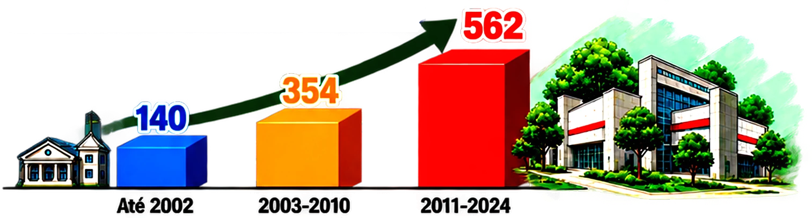
Gráfico — Expansão da RFEPCT em Unidades.
A expansão representou não apenas o crescimento quantitativo da Rede, mas a possibilidade de levar a Educação Profissional pública a territórios historicamente menos atendidos.
INTERIORIZAR PARA APROXIMAR
Com a criação dos Institutos Federais, a expansão da Rede passou a assumir também um importante caráter de interiorização. A proposta buscava alcançar regiões afastadas dos grandes centros e aproximar a Educação Profissional pública de populações que historicamente tiveram menores oportunidades de acesso.
No Paraná, a criação do IFPR ocorreu a partir da transformação da Escola Técnica vinculada à Universidade Federal do Paraná, no contexto da Lei nº 11.892/2008. A partir dessa estrutura, novas unidades foram implantadas em diferentes regiões do estado (IFPR, 2009; IFPR, 2026).
A distribuição dos campi procurou contemplar o território paranaense e alcançar também regiões com menores indicadores de desenvolvimento, articulando a oferta educacional às características e demandas locais.
“O IFPR oferece condições adequadas para a produção de conhecimento e para a qualificação da força de trabalho necessários ao estímulo do desenvolvimento socioeconômico do Paraná. Por isso, a distribuição espacial dos Campi procurou contemplar o Estado como um todo, ao situar as unidades em municípios considerados pólos de desenvolvimento regional, e já está prevista a ampliação da rede por meio da implantação de núcleos avançados vinculados diretamente aos Campi instalados; sendo que a expansão futura deverá contemplar as regiões com carência de Atendimento e com baixo IDH como: sudoeste, sudeste, centro-sul, norte-central e metropolitana.”
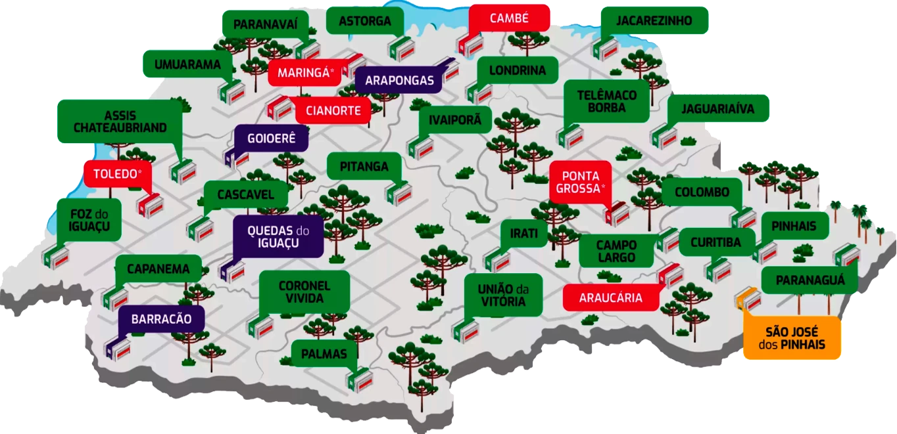
Figura - Mapa dos Campi do IFPR
E foi nesse processo de interiorização que o IFPR chegou a Jacarezinho.
DE “PASTOS E VACAS” A UM CAMPUS DO IFPR
Inserido na região do Norte Pioneiro do Paraná, o município de Jacarezinho apresentou proposta para sediar uma das novas unidades do Instituto Federal, em consonância com o processo de expansão e interiorização da Rede (Silva et al., 2019).
O Campus iniciou suas atividades em maio de 2010, inicialmente com os cursos técnicos subsequentes em Alimentos, Informática e Eletromecânica. Seus primeiros anos foram marcados pelo desafio de estruturar a instituição e construir sua identidade junto à comunidade local.
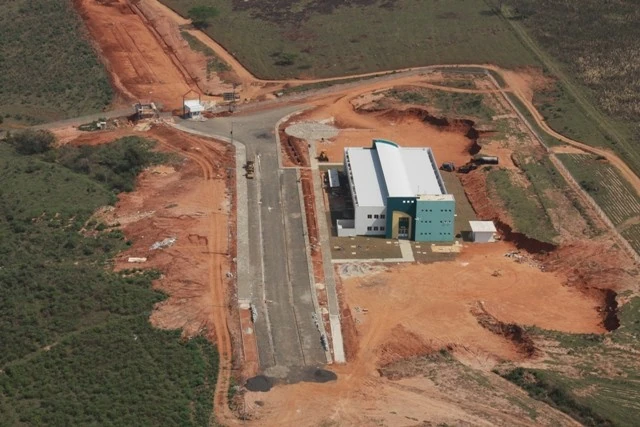
Imagem — Construção do IFPR — Campus Jacarezinho
“[...] oito anos atrás, nada havia. Ou melhor, havia pastos e vacas...”
A expressão ajuda a dimensionar a transformação ocorrida naquele espaço. O desenvolvimento do Campus foi acompanhado pela ampliação de sua estrutura, de seus cursos, de seu quadro de profissionais e de sua presença na região.
2010Início das atividades
2011Início da oferta de cursos técnicos integrados ao Ensino Médio
Expansão e consolidação
MAIS DO QUE CONSTRUIR PRÉDIOS
ANTES
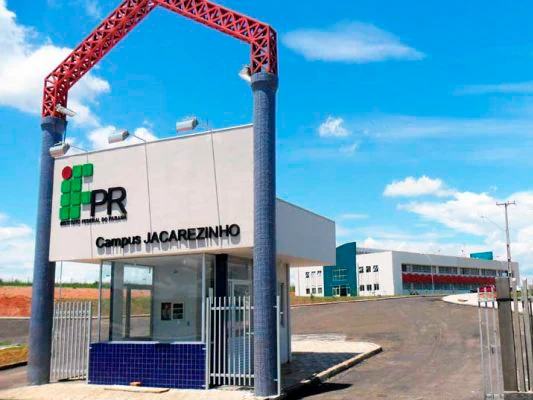
Imagem — IFPR — Campus Jacarezinho no início.
AGORA
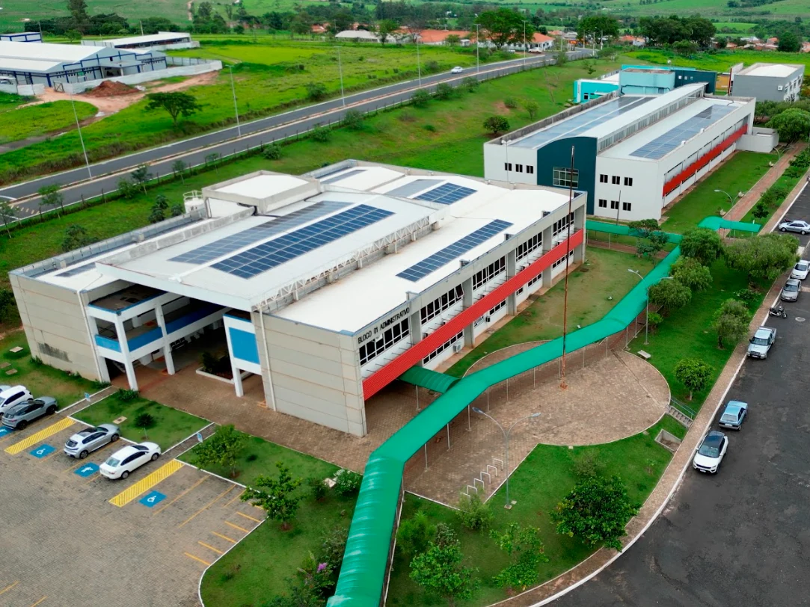
Imagem — IFPR Campus Jacarezinho atualmente.
Ao longo dos anos, o Campus Jacarezinho passou por significativa ampliação de sua infraestrutura, incorporando novas salas de aula, laboratórios e espaços destinados às atividades pedagógicas e administrativas. Esse processo acompanhou o crescimento da oferta educacional, do número de estudantes e do quadro de profissionais da instituição (IFPR, 2026).
A consolidação de uma instituição pública, entretanto, não termina com sua implantação. Seu funcionamento depende da continuidade dos investimentos necessários à manutenção da infraestrutura, dos laboratórios e das atividades de ensino, pesquisa e extensão.
O PDI 2009–2013 previa para o Campus Jacarezinho um piso orçamentário inicial de R$ 1,5 milhão em 2010, com acréscimos anuais de 10%, alcançando aproximadamente R$ 2,2 milhões em 2014 (IFPR, 2009, p. 90).
Os valores efetivamente executados apresentaram oscilações entre 2013 e 2025. Silva, Santos e Grabowski (2024) relacionam parte das restrições de recursos para a educação observadas nesse período ao contexto político-econômico e às medidas de ajuste fiscal adotadas no país.
DIFERENTES CAMINHOS DE FORMAÇÃO
INGRESSO E VERTICALIZAÇÃO
O Ensino Médio Integrado ocupa lugar central na oferta do Campus Jacarezinho. Na oferta apresentada pela pesquisa, são oferecidos quatro cursos técnicos integrados:
ALIMENTOS40 vagas
ELETROTÉCNICA20 vagas
INFORMÁTICA40 vagas
MECÂNICA20 vagas
120 VAGAS ANUAIS NO ENSINO MÉDIO INTEGRADO
Com o preenchimento integral das vagas, são 120 novos estudantes por ano no Ensino Médio Integrado.
A centralidade dessa modalidade está relacionada à própria Lei nº 11.892/2008, que determina aos Institutos Federais a destinação de, no mínimo, 50% das vagas à Educação Profissional Técnica de nível médio, prioritariamente em cursos integrados (Brasil, 2008).
AÇÕES AFIRMATIVAS
Tabela — Distribuição de Vagas Processo Seletivo IFPR. Fonte: IFPR (2026).
O acesso também incorpora políticas de ações afirmativas. No processo analisado, 60% das vagas são destinadas a estudantes que cursaram integralmente o Ensino Fundamental em escolas públicas, considerando ainda critérios de renda, pertencimento étnico-racial, população quilombola e pessoas com deficiência. Santos e Escobar (2021) compreendem as ações afirmativas nos Institutos Federais como um avanço no enfrentamento das desigualdades educacionais e na ampliação da presença de novos perfis de estudantes nesses espaços.
VERTICALIZAÇÃO
A formação também pode continuar dentro da própria instituição. Esse princípio é denominado verticalização e está previsto na Lei nº 11.892/2008.
“A verticalização, por seu turno, extrapola a simples oferta simultânea de cursos em diferentes níveis sem a preocupação de organizar os conteúdos curriculares de forma a permitir um diálogo rico e diverso entre as formações.”
EDUCAÇÃO BÁSICA
FORMAÇÃO TÉCNICA
GRADUAÇÃO
PÓS-GRADUAÇÃO
Figura 2 — Itinerário Formativo Educação Profissional e Tecnológica (representação simplificada). Fonte: MEC (2026).
Essa organização possibilita a construção de diferentes itinerários formativos dentro da própria Rede (Pacheco, 2011; Ciavatta; Ramos, 2012).
UMA INSTITUIÇÃO FEITA POR PESSOAS
2010
13 servidores + Diretor-Geral
14 pessoas no total: 7 docentes e 7 técnicos-administrativos.
Observação: o Diretor-Geral também é docente e está incluído nos 7 docentes.
Fonte: Silva (2019).
Em conferência com a fonte
2025
111 servidores
65 docentes efetivos
8 docentes substitutos
38 técnicos-administrativos
Fonte: Portal INFO/IFPR, atualização de outubro de 2025.
DocenteDocente substitutoTécnico-administrativoCada marca representa uma pessoa.
Quando o Campus Jacarezinho iniciou suas atividades, uma pequena equipe foi responsável por estruturar e consolidar seu funcionamento. Com o crescimento da instituição, esse quadro foi gradativamente ampliado (Silva, 2019).
Os servidores estão distribuídos entre atividades administrativas e setores relacionados ao ensino, à pesquisa e à extensão. Os dados institucionais também demonstram elevado nível de qualificação acadêmica, especialmente entre os docentes, entre os quais predominam profissionais com titulação de mestrado e doutorado (IFPR, 2026).
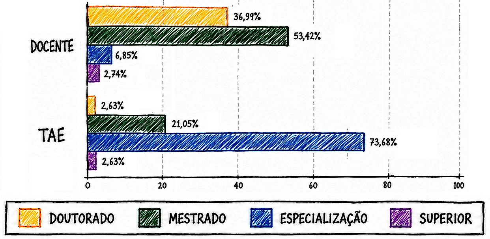
Gráfico — Qualificação Acadêmica dos Profissionais por Categoria — IFPR Jacarezinho. Fonte: Elaborado pelos autores, adaptado de IFPR (2026).
GESTÃO
ADMINISTRAÇÃO
ENSINO
PESQUISA
EXTENSÃO
Áreas de atuação institucional — síntese.
Infraestrutura e profissionais qualificados constituem condições importantes para a oferta educacional.
Mas como essa estrutura se aproxima das necessidades dos estudantes?
PERMANÊNCIA TAMBÉM EXIGE ACOMPANHAMENTO
PARA ALÉM DA SALA DE AULA
A trajetória escolar não acontece apenas dentro da sala de aula. Diferentes demandas pedagógicas e sociais podem atravessar o percurso dos estudantes e exigir ações de acompanhamento e assistência.
No Campus Jacarezinho, alguns setores mantêm contato mais próximo com os estudantes. Entre eles está a Seção Pedagógica e de Assuntos Estudantis (SEPAE), cuja finalidade institucional é:
“auxiliar os docentes e alunos nas ações referentes ao processo de ensino-aprendizagem, articulado com a assistência estudantil”
A SEPAE possui caráter multiprofissional e, no período analisado, era constituída por profissionais das áreas de pedagogia, psicologia e serviço social, além de assistentes de alunos (IFPR, 2026).
SEPAE
2 pedagogos
1 psicólogo
1 assistente social
2 assistentes de alunos
A Política Institucional de Assistência Estudantil do IFPR estabelece, entre seus objetivos:
Garantir condições de permanência e conclusão.
Minimizar os efeitos das desigualdades sociais e regionais.
Reduzir as taxas de retenção e evasão.
Contribuir para o desempenho acadêmico e para a inclusão social.
Fonte: Resolução nº 239/2025 do Conselho Superior do IFPR (IFPR, 2025).
O Manual de Competências também atribui à SEPAE responsabilidades relacionadas à divulgação, organização e acompanhamento dos programas de assistência estudantil (IFPR, 2024).
A existência dessas políticas evidencia que a preocupação institucional não termina no acesso. Há estruturas voltadas também ao acompanhamento da trajetória escolar.
Mas garantir o ingresso e oferecer estruturas de apoio são suficientes para assegurar a permanência?
QUANDO OLHAMOS PARA AS TRAJETÓRIAS
ACESSO, PERMANÊNCIA, CONCLUSÃO... E EVASÃO
375 no Ensino Médio Integrado986 estudantes matriculados
Os 375 estudantes do Ensino Médio Integrado fazem parte dos 986 matriculados. Fonte: Portal INFO/IFPR, dados utilizados na pesquisa.Gráfico — Quantidade de alunos matriculados por curso — IFPR Campus Jacarezinho. Fonte: Elaborado pelos autores, adaptado de IFPR (2026), com auxílio de IA.
A trajetória apresentada até aqui revela uma instituição que ampliou sua infraestrutura, seu quadro de profissionais, sua oferta educacional e suas políticas voltadas ao acompanhamento dos estudantes.
Entretanto, compreender essa trajetória exige olhar também para aqueles que ingressaram, mas não permaneceram até a conclusão.
Total de ingressantes e período1.773 estudantes
Quantitativos por situação acadêmica717 Concluintes, 698 Evadidos e 353 Matriculados
Percentual de evasão entre todos os ingressantes39,5%
Percentual de evasão entre as trajetórias encerradas49,3%
Conclusão de Curso
Evadidos
Matriculados
Gráfico - Situação dos Estudantes – IFPR - Campus Jacarezinho (2011-2026) Fonte: Elaborado pelos Autores, adaptado de IFPR (2026).
EXPANDIR O ACESSO. E A PERMANÊNCIA?
O DESAFIO QUE PERMANECE
A análise histórica mostra que a evasão não se distribui de maneira uniforme. Entre 2011 e 2025, os percentuais variaram conforme o ano de ingresso. O maior índice registrado ocorreu em 2015, quando aproximadamente 52% dos ingressantes foram classificados em situação de evasão.
É necessário, entretanto, cuidado na leitura das coortes mais recentes. Considerando o tempo necessário para conclusão dos cursos, parte dos estudantes ingressantes nos últimos anos ainda estava em formação no momento da coleta dos dados. Por isso, esses percentuais ainda podem sofrer alterações. Entre as coortes com trajetórias mais consolidadas utilizadas na comparação da pesquisa, 2013 apresentou o menor índice, aproximadamente 30%.
aproximadamente52%
2015 — maior índice registrado
aproximadamente30%
2013 — menor índice entre as coortes com trajetórias mais consolidadas
Quando os dados são observados por curso, também aparecem diferenças importantes. O curso Técnico em Alimentos apresenta, de forma recorrente, índices inferiores aos observados em alguns dos demais cursos. Em sentido oposto, o curso Técnico em Mecânica registrou, em 2018, evasão de 76,2% entre os ingressantes daquele ano.
UMA TENSÃO SE EVIDENCIA
De um lado, encontramos uma instituição resultante de um amplo processo de expansão e interiorização da educação pública federal, fundamentada em princípios de formação integrada e democratização do acesso. Encontramos também investimentos em infraestrutura, profissionais qualificados e políticas destinadas ao acompanhamento e à permanência dos estudantes.
De outro, encontramos trajetórias interrompidas antes da conclusão.
Os dados indicam que a existência dessas estruturas e políticas, embora fundamental, não tem sido suficiente para assegurar a permanência de todos os estudantes. A evasão ultrapassa, portanto, sua dimensão estatística e se apresenta como um desafio à própria efetivação da proposta educacional defendida pela instituição.
SE O ACESSO FOI AMPLIADO, O QUE AINDA PRECISAMOS COMPREENDER PARA FORTALECER A PERMANÊNCIA?
5
Capítulo 5 de 11
ENTRE PERMANECER E EVADIR: QUANDO OS NÚMEROS GANHAM VOZ
Ampliar o acesso à educação pública foi uma das marcas da expansão da Rede Federal de Educação Profissional, Científica e Tecnológica. Entretanto, ingressar não significa, necessariamente, permanecer até a conclusão.
Mesmo diante das políticas de democratização do acesso, a evasão continua presente na RFEPCT. Em 2022, por exemplo, as taxas médias de evasão alcançaram 41% nos cursos técnicos e 51% nos cursos de graduação, segundo dados apresentados pelo Tribunal de Contas da União (Brasil, 2024).
REDE FEDERAL (RFEPCT) — 2022
41%
CURSOS TÉCNICOS
51%
CURSOS DE GRADUAÇÃO
Taxas médias de evasão na RFEPCT em 2022. Fonte: Brasil (2024), conforme pesquisa.
Foi diante dessa realidade que a pesquisa desenvolvida no mestrado buscou compreender a permanência e a evasão a partir das experiências de quem vivenciou essas trajetórias e de quem as acompanha no cotidiano institucional do IFPR Campus Jacarezinho. Para isso, foram realizadas entrevistas semiestruturadas com nove docentes que ocupam ou ocuparam funções de coordenação e direção na instituição e sete estudantes considerados evadidos entre os anos de 2023 e 2025.
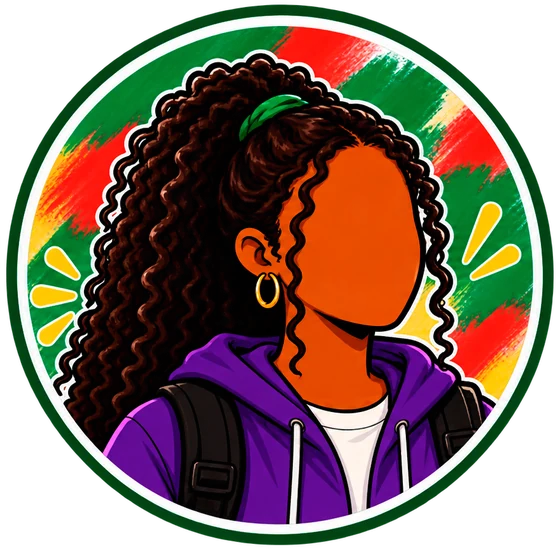
ESTUDANTES EVADIDOS
Experiências de quem interrompeu o percurso.
TRAJETÓRIA ESCOLAR
DOCENTES
Percepções de quem acompanha essas trajetórias.
As entrevistas foram analisadas por meio da Análise de Conteúdo (Bardin, 2016). Desse processo emergiram 720 registros: 379 provenientes das entrevistas com docentes e 341 das entrevistas com estudantes evadidos.
720 REGISTROS ANALISADOS
379registros docentes
341registros estudantes evadidos
52,6%47,4%
Os números correspondem a registros da análise das entrevistas, e não a número de entrevistados ou de estudantes.
Esses registros permitiram acompanhar diferentes momentos da trajetória: aquilo que acontece antes do ingresso, a chegada e adaptação, as experiências vivenciadas durante o curso, as possibilidades de enfrentamento da evasão e, finalmente, os caminhos construídos depois da saída.
UM MAPA PARA COMPREENDER AS TRAJETÓRIAS
Permanecer ou evadir não resulta, necessariamente, de uma única situação. A literatura aponta que esses processos são complexos e multifacetados, envolvendo condições pessoais, familiares, sociais, acadêmicas e institucionais (Dore; Lüscher, 2011; Figueiredo; Salles, 2017; Maduro Silva; Castioni; Thompson Martínez, 2021).
Embora essas condições possam ser organizadas em dimensões individuais e institucionais, elas não acontecem de maneira isolada. Uma dificuldade acadêmica, por exemplo, pode encontrar-se com condições socioeconômicas, necessidade de trabalhar, deslocamento, relações familiares ou formas de acompanhamento oferecidas pela instituição.
Por isso, na pesquisa, optou-se por acompanhar a trajetória estudantil.
INGRESSO NA INSTITUIÇÃO E ESCOLHA DO CURSO99 registros | 13,75%
ACOLHIMENTO, ADAPTAÇÃO E EXPERIÊNCIA INICIAL44 registros | 6,11%
TRAJETÓRIA ACADÊMICA507 registros | 70,42%
AÇÕES E ESTRATÉGIAS DE ENFRENTAMENTO DA EVASÃO49 registros | 6,81%
Podem ocorrer ao longo do percurso, e não somente depois da trajetória acadêmica.
TRAJETÓRIAS E PERCEPÇÕES APÓS A EVASÃO21 registros | 2,92%
Mapa Categorial e Quantidade de Registros Os percentuais representam a distribuição dos 720 registros analisados, não o peso causal de cada categoria na evasão. *Pequena diferença na soma percentual decorre do arredondamento.
A concentração de 507 registros na trajetória acadêmica chama atenção: mais de 70% dos excertos analisados estão relacionados às experiências vivenciadas durante o percurso formativo.
A evasão aparece no final do vínculo institucional. Mas sua compreensão exige olhar para toda a trajetória.
ANTES DE ENTRAR: O QUE O ESTUDANTE SABE SOBRE O IF?
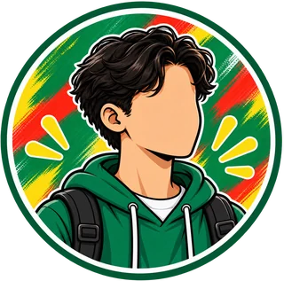
“Eu ouvia falar muito bem do nível da qualidade do Instituto Federal.”
As trajetórias começam antes da matrícula.
Os relatos mostraram uma imagem predominantemente positiva do IFPR Campus Jacarezinho, associada à qualidade do ensino, formação dos professores, infraestrutura e oportunidades educacionais.
Essa percepção encontra aproximações com pesquisas realizadas em outras instituições da RFEPCT. Zibenberg e Gil (2018) relacionam a procura pelo Ensino Médio Integrado ao reconhecimento da qualidade educacional, enquanto Oliveira e Oliveira (2019) observam que alguns estudantes procuram essas instituições prioritariamente pela qualidade do Ensino Médio, ficando o interesse pela formação técnica em posição secundária.
Entretanto, conhecer a reputação da instituição não significa conhecer seu funcionamento.
Os entrevistados indicaram que muitos ingressantes possuem informações superficiais sobre a instituição e sobre os cursos. Parte desse conhecimento circula principalmente pelas relações familiares e sociais, o conhecido “boca a boca”. Familiares, amigos e estudantes que já passaram pelo IFPR tornam-se importantes fontes de informação (Almeida; Miranda; Machado, 2019).
SÍNTESE EXPLICATIVA
“OUVI FALAR MUITO BEM DO IF”
não significa necessariamente
“SEI COMO FUNCIONA O IF E CONHEÇO O CURSO QUE ESCOLHI”
A escolha do curso também ocorre a partir de diferentes motivações. Alguns estudantes já demonstravam identificação com a área técnica; outros valorizavam principalmente a oportunidade de concluir o Ensino Médio juntamente com uma formação profissional.
Quanto o estudante conhece sobre a instituição e sobre o curso antes de fazer sua escolha?
A literatura reforça a importância de informações anteriores ao ingresso, capazes de favorecer escolhas mais informadas e diminuir distanciamentos entre expectativas e experiência (Fredenhagem et al., 2012; Barbosa; Lobregat; Lobão, 2023).
Visitas ao Campus, apresentações em escolas e outras ações de aproximação aparecem, portanto, como possibilidades importantes — desde que constituam um processo contínuo, e não apenas ações pontuais.
ENTRAR TAMBÉM SIGNIFICA APRENDER A ESTAR
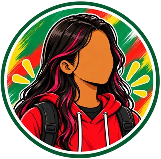
“Foi difícil me adaptar, mas depois eu consegui fazer amizade, daí foi mais tranquilo. Só que, querendo ou não, foi um grande baque para mim.”
O ingresso no IFPR Campus Jacarezinho não representa somente a passagem do Ensino Fundamental para o Ensino Médio.
Para muitos estudantes, significa encontrar simultaneamente um novo espaço, novos professores, novos colegas, uma nova organização curricular e novas formas de estudar e ser avaliado.
A transição exige também maior participação do estudante na organização de seu percurso. A escolha de unidades curriculares, a formação de turmas diferentes em cada horário, o contato com componentes técnicos e a diversidade das práticas de ensino e avaliação constituem experiências novas.
Além disso, editais, bolsas, projetos, auxílios e outros procedimentos institucionais precisam ser compreendidos justamente em um momento no qual o ingressante ainda está aprendendo como funciona o IF.
TUDO AO MESMO TEMPO
NOVA ESCOLA
NOVOS COLEGAS
UNIDADES CURRICULARES (UCs)
AUTONOMIA
PROFESSORES
INGRESSANTE
CURSO TÉCNICO
AVALIAÇÕES
EDITAIS
AUXÍLIOS
PROJETOS
“Em vez de identificar quais são os principais fatores, em uma certa hierarquia, para determinar as causas da evasão, o que se propõe é uma compreensão de todos esses fatores como parte de um mesmo processo: o processo de transição escolar.”
A contribuição dos autores ajuda a compreender que adaptação não deve ser reduzida à capacidade individual do estudante de “se ajustar”. Trata-se de um processo mediado também pelas condições sociais e institucionais encontradas nessa passagem.
Acolher também significa ajudar o estudante a compreender a instituição em que acabou de ingressar.
QUANDO AS DIFICULDADES COMEÇAM A SE ENCONTRAR
A Trajetória Acadêmica foi a maior categoria construída na pesquisa. Nela apareceram dimensões emocionais, acadêmicas, curriculares, familiares, relacionais, socioeconômicas e materiais.
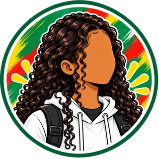
“Eu não estive bem durante muito tempo mentalmente, então acabava que eu não conseguia me concentrar nas aulas.”
Os relatos dos estudantes apresentaram situações relacionadas à ansiedade, dificuldades de concentração e convivência social, além de experiências pessoais que repercutiram sobre a aprendizagem e a continuidade dos estudos.
Essas experiências não devem ser tratadas isoladamente como explicações para a evasão. Estudos sobre o Ensino Médio Integrado também identificam possíveis repercussões da ansiedade, do estresse e da depressão sobre rendimento e permanência (da Silva Lima; Dias Camargo Maciel, 2025; Andrade; Silva, 2024).
A pandemia de Covid-19 aparece igualmente nos relatos, associada a dificuldades de adaptação ao ensino remoto, atrasos na trajetória e repercussões que continuaram sendo percebidas posteriormente.
Outro conjunto de registros tratou das atitudes e do engajamento dos estudantes: frequência, hábitos de estudo, participação e procura por atendimento.
PARTICIPAÇÃO DO ESTUDANTE
Frequência
Estudo
Organização
Envolvimento
TRAJETÓRIA ACADÊMICA
CONDIÇÕES PARA APRENDER
Mediação pedagógica
Acompanhamento
Condições sociais
Organização institucional
Os relatos mostram que o envolvimento do estudante importa. Entretanto, Santos e Silva (2022) ajudam a problematizar explicações que atribuam dificuldades acadêmicas, permanência ou evasão exclusivamente às atitudes individuais.
Responsabilização não pode significar culpabilização.
“FALTA DE BASE” OU DESIGUALDADE NA TRAJETÓRIA?
Entre todos os conjuntos analisados, Dificuldades Acadêmicas, Reprovação e Sobrecarga Escolar reuniu o maior número de registros.
“Eu vinha de uma escola estadual muito precária [...] não tinha quase nenhum conhecimento em matemática básica.”
Os estudantes mencionaram dificuldades com determinadas áreas do conhecimento, elaboração do TCC, cansaço, reprovações e acúmulo de carga horária. Quando o percurso se prolonga, a permanência pode começar a disputar espaço com outros projetos de vida, como trabalhar ou ingressar no Ensino Superior.
Outro elemento recorrente foi aquilo que os participantes chamaram de fragilidades ou defasagens da formação anterior, especialmente em Matemática, leitura e interpretação de textos.
Mas compreender essa situação apenas como uma “falta” do estudante esconde uma parte importante do problema.
Tem a ver com o fato de que falta de base, em uma análise mais ampla, é também questão de política pública. Se os alunos não dispõem dos conhecimentos básicos necessários ao acompanhamento das aulas, é porque, em muitos casos, são oriundos de escolas precarizadas, onde convivem com problemas que vão desde a ausência de infraestrutura básica para o aprendizado até a falta de professor ou de um ensino que possa lhes garantir condições mínimas de participação.
A ampliação do acesso à Educação Profissional não elimina as desigualdades educacionais construídas antes do ingresso. Por isso, a questão não é apenas perguntar o que o estudante não aprendeu, mas também quais condições encontrará para aprender depois que ingressar.
MUDANÇA DE PERSPECTIVA
“O estudante não tem base.”
“Que trajetória escolar esse estudante percorreu e quais apoios precisa encontrar agora?”
QUANDO A AUTONOMIA TAMBÉM EXIGE ACOMPANHAMENTO
Desde 2015, o Campus Jacarezinho adota uma organização curricular diferente de uma grade tradicional fixa. Os estudantes cumprem sua formação por meio de Unidades Curriculares (UCs) e participam da construção de seus próprios percursos, acompanhados por tutores ou aconselhadores acadêmicos.
A proposta amplia possibilidades de escolha e busca considerar necessidades, interesses e potencialidades dos estudantes. O sistema Bússola auxilia estudantes e tutores no acompanhamento das UCs cursadas e da trajetória curricular.
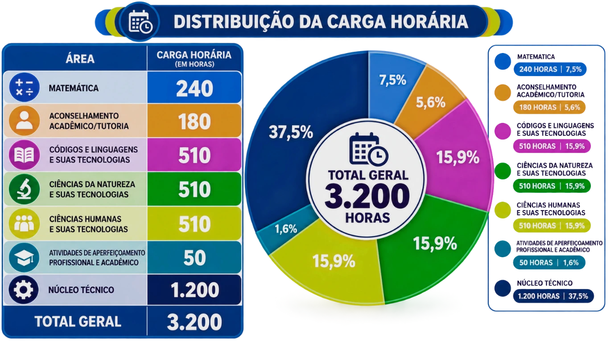
Figura - Distribuição Ilustrativa da Carga Horária. Fonte: Elaborado pelos autores, adaptado de Fiorucci (2023), com auxílio de IA.
“Quem é calouro ou quem entra primeiro escolhe por último. Então você tem que escolher o que sobra.”
Entretanto, os relatos também mostram tensões na operacionalização dessa flexibilidade: dificuldade de escolher UCs, incompatibilidade de horários, prioridade de estudantes veteranos, ingresso em unidades consideradas avançadas e necessidade de compreender uma organização curricular muito diferente daquela anteriormente vivenciada.
Silva (2023) denomina de “liberdade aprisionadora” o paradoxo que pode surgir quando a ampliação da liberdade de escolha exige um nível de autonomia e planejamento que nem todos os estudantes desenvolveram da mesma maneira.
FLEXIBILIDADE+ORIENTAÇÃO+ACOMPANHAMENTO
A análise realizada na pesquisa não busca defender ou responsabilizar isoladamente a proposta curricular pela permanência ou pela evasão. Os resultados mostram algo mais complexo: as possibilidades do currículo dependem também das formas como são operacionalizadas e acompanhadas institucionalmente.
PERMANECER TAMBÉM É SER ACOMPANHADO
A tutoria apareceu como um importante espaço de aproximação entre docentes e estudantes. Entretanto, sua existência formal não significa que todos vivenciem o acompanhamento da mesma maneira.
Alguns estudantes relataram experiências em que a orientação facilitou significativamente sua trajetória; outros perceberam menor proximidade ou dificuldade para buscar auxílio.
Essa diferença reforça que acompanhar não significa apenas disponibilizar um professor ou serviço: envolve construir condições para identificar dificuldades, estabelecer vínculos e orientar trajetórias.
A pesquisa também mostrou a importância das relações com os professores para além da tutoria.
“Os professores eram muito disponíveis. Eles reservavam horários para conversar, tirar dúvidas.”
Mas essa experiência não foi uniforme:
“Pouquíssimos professores tinham essa disposição [...] eu sentia [...] como se eu já tivesse ‘gastado’ a minha cota de perguntas.”
A dimensão relacional do processo educativo é importante porque os estudantes não chegam à instituição nas mesmas condições sociais e educacionais (Arroyo, 2012; Silveira; Maraschin, 2020).
ESTUDANTE
TUTOR/A
DOCENTES
EQUIPE PEDAGÓGICA
EQUIPE MULTIDISCIPLINAR
FAMÍLIA
Rede conceitual de acompanhamento.
A atuação das equipes pedagógicas e multidisciplinares também foi reconhecida como importante, embora os relatos indiquem desafios relacionados à quantidade de profissionais, aos fluxos internos e à aproximação dos estudantes com os serviços disponíveis (Zanin; Garcia, 2020; Silveira; Maraschin, 2020).
O acompanhamento é uma responsabilidade institucional compartilhada.
FAMÍLIA, RENDA E TRABALHO: A ESCOLA NÃO ACONTECE ISOLADAMENTE
As entrevistas mostram que a trajetória escolar também é atravessada pelas condições existentes fora dos limites da instituição.
O apoio familiar apareceu associado ao incentivo, ao acompanhamento e à aproximação entre família e escola. Entretanto, as próprias famílias possuem diferentes condições sociais, econômicas e culturais para realizar esse acompanhamento (Ferreira; Valer, 2022; Ramos; Gonçalves Junior, 2024; Zibenberg; Gil, 2018).
As condições socioeconômicas, por sua vez, apareceram concretamente nos relatos por meio de despesas com transporte, alimentação, materiais escolares e contribuição para a renda familiar.
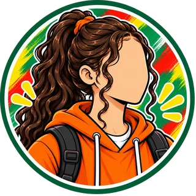
“Minha mãe já não tinha mais como me manter lá. O transporte ficava em torno de quatrocentos reais, e é caro. Às vezes, se esse dinheiro fosse usado, poderia acabar faltando em casa.”
A dimensão econômica, portanto, não se resume à renda considerada isoladamente. Ela interfere nas condições materiais disponíveis para frequentar e acompanhar a formação (Oliveira; Oliveira, 2019).
Para alguns estudantes, trabalhar torna-se uma forma de custear a própria permanência.
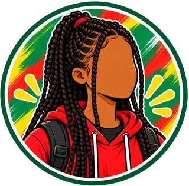
“Eu sempre trabalhei, não só pra poder pagar o ônibus, mas também pra poder comprar comida, pra poder comprar as coisas que eu precisava, jalecos e tal.”
UMA TENSÃO PRESENTE EM ALGUMAS TRAJETÓRIAS
Os resultados mostram, entretanto, que trabalhar não produz automaticamente evasão. O que assume relevância são as condições dessa conciliação: jornada, horários, deslocamento, cansaço, situação familiar e possibilidades de compatibilizar trabalho e formação.
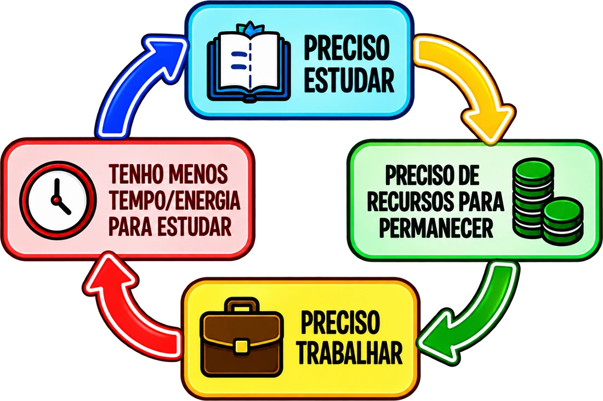
O CUSTO DE PERMANECER
As condições materiais de permanência aparecem com força quando os estudantes falam sobre auxílios, alimentação e transporte.
“Sem o PACE teria saído muito antes do IF.”
Os programas de assistência estudantil constituem suporte concreto para despesas necessárias à continuidade da formação. Nos relatos, os benefícios foram utilizados para transporte e alimentação e, em alguns casos, considerados fundamentais para permanecer no IFPR.
Entretanto, os relatos também apresentam estudantes que não conseguiram acessar os benefícios ou que deixaram de recebê-los. Essa questão encontra correspondência no Acórdão nº 986/2024, que identificou, na RFEPCT, insuficiência de recursos para assistência estudantil e alimentação, além de limitações de pessoal e infraestrutura (Brasil, 2024).
Valores empenhados, em reais (R$)
600 mil
400 mil
200 mil
0
462 mil20162016: R$ 462.195,00
337 mil20172017: R$ 337.090,00
306 mil20182018: R$ 306.000,00
396 mil20192019: R$ 396.267,22
333 mil20202020: R$ 333.473,69
331 mil20212021: R$ 331.465,48
595 mil20222022: R$ 594.850,70
600 mil20232023: R$ 599.646,11
482 mil20242024: R$ 482.124,24
327 mil20252025: R$ 326.517,88
Gráfico - Valores Empenhados para Auxílios Estudantis no IFPR Campus Jacarezinho — 2016–2025. Fonte: Elaborado pelos autores, adaptado de IFPR (2026).
VALORES EMPENHADOS
2023
Valor próximo de R$ 600 mil.
2025
Montante empenhado correspondente aproximadamente à metade do registrado em 2023.
ALIMENTAÇÃO E TRANSPORTE
A alimentação também apareceu como condição cotidiana. O Campus não possuía oferta formal de alimentação escolar no período analisado, fazendo com que estudantes precisassem levar ou adquirir seus alimentos.
O transporte completa esse cenário. Para estudantes de outros municípios ou áreas rurais, os relatos apresentam longos deslocamentos, custos elevados e limitações para participar de atividades no contraturno.
TRANSPORTE
ALIMENTAÇÃO
ASSISTÊNCIA
Permanecer também se relaciona com as condições materiais!
DO DIAGNÓSTICO À AÇÃO
Se a evasão resulta de trajetórias complexas, seu enfrentamento também não pode depender de uma ação isolada.
Docentes entrevistados mencionaram iniciativas como acompanhamento de estudantes com dificuldades, aproximação com as famílias, avaliação diagnóstica, análise de dados institucionais e atuação diante da intenção de desligamento.
Um dos relatos sintetiza uma preocupação importante:
“Na permanência é onde a gente está com mais dificuldade.”
Em 2026, o Campus iniciou uma experiência de avaliação diagnóstica em Língua Portuguesa e Matemática, buscando identificar conhecimentos dos estudantes ingressantes e utilizar essas informações na organização de unidades voltadas às dificuldades encontradas.
Os Acórdãos nº 506/2013 e nº 986/2024 do TCU reforçam a necessidade de articular:
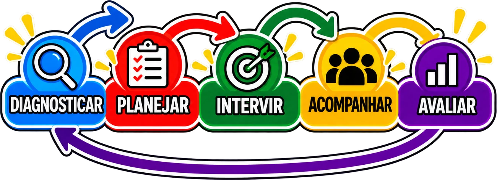
Síntese explicativa do texto: continuidade e revisão das ações.
O documento de 2024 chama atenção para a necessidade de Planos Estratégicos de Permanência e Êxito capazes de diagnosticar as causas da evasão e retenção e orientar ações administrativas e pedagógicas respeitando as especificidades de cada território (Brasil, 2024).
No IFPR, consulta realizada à Pró-Reitoria de Ensino durante a pesquisa identificou a existência de uma portaria institucional que prevê Comissões Permanentes de Promoção da Permanência e Êxito Estudantil. Em 2026, esse movimento passou a dialogar também com a Portaria SETEC/MEC nº 4/2026, que instituiu o Programa Acesso, Permanência e Êxito na Rede Federal — Rede APE.
Produzir dados é importante. Transformá-los em ações, acompanhá-las e avaliar seus resultados é o desafio seguinte.
EVADIR NÃO SIGNIFICOU INTERROMPER TODA A TRAJETÓRIA
A pesquisa procurou olhar também para um momento que frequentemente desaparece das estatísticas: o que acontece depois da evasão?
Nos casos analisados, deixar o IFPR Campus Jacarezinho não significou necessariamente abandonar definitivamente os estudos.
Alguns participantes concluíram o Ensino Médio por outros caminhos. Outros ingressaram posteriormente no Ensino Superior ou reconstruíram seus projetos educacionais e profissionais.
INGRESSO NO IFPR
EXPERIÊNCIAS
EVASÃO
DEPOIS DA SAÍDA, POSSIBILIDADES DE:
Conclusão do Ensino Médio por outro caminho
Ensino Superior
Trabalho
Nova formação
Novos projetos
Os caminhos podem se combinar e ocorrer em momentos diferentes.
Os estudantes também reconheceram contribuições da experiência vivenciada no Instituto, mesmo sem terem concluído o curso.
“Tem coisas que eu uso no meu dia a dia até hoje, que eu acabei guardando.”
“Hoje em dia eu ainda trabalho basicamente com coisas que eles ensinavam lá.”
Foram mencionados conhecimentos técnicos e gerais, experiências acadêmicas, desenvolvimento pessoal, amizades e aprendizagens que permaneceram significativas depois da saída.
A evasão interrompe um vínculo institucional. Mas não necessariamente encerra uma trajetória educacional.
Esse resultado também abre uma possibilidade de investigação: entre os estudos consultados, foram encontrados poucos trabalhos voltados especificamente aos percursos construídos depois da evasão e aos significados que ex-estudantes atribuem posteriormente à experiência vivenciada na instituição.
PERMANÊNCIA: UM PROCESSO QUE PRECISA SER ACOMPANHADO
As entrevistas mostram que não existe uma explicação única capaz de responder por que um estudante permanece ou interrompe sua trajetória.
Antes mesmo do ingresso aparecem expectativas, conhecimentos sobre a instituição e escolhas profissionais. Na chegada, surgem desafios relacionados ao acolhimento, adaptação e compreensão de uma nova organização escolar.
Ao longo da trajetória, encontram-se e se sobrepõem diferentes condições, experiências e relações.
EXPECTATIVAS E ESCOLHA DO CURSO
ACOLHIMENTO E ADAPTAÇÃO
ASPECTOS EMOCIONAIS
DIFICULDADES ACADÊMICAS
FORMAÇÃO ESCOLAR ANTERIOR
ORGANIZAÇÃO CURRICULAR
TUTORIA E ACOMPANHAMENTO
PERMANÊNCIA E EVASÃO
RELAÇÕES COM DOCENTES
FAMÍLIA
CONDIÇÕES SOCIOECONÔMICAS
TRABALHO
ASSISTÊNCIA ESTUDANTIL
ALIMENTAÇÃO
TRANSPORTE
Rede conceitual, sem pesos ou hierarquias. As conexões representam relações possíveis, não relações estatisticamente medidas.
As categorias identificadas durante a pesquisa mostram justamente que esses elementos podem se encontrar de maneiras diferentes em cada trajetória.
Não encontramos “a causa” da evasão.
Encontramos trajetórias atravessadas por diferentes condições, experiências e relações.
Essa constatação também modifica a maneira de pensar a atuação institucional. Se as dificuldades se constroem ao longo da trajetória, a permanência precisa ser acompanhada ao longo dela — desde antes do ingresso, passando pela adaptação e pelo desenvolvimento acadêmico, até os momentos em que surgem sinais de dificuldade ou intenção de saída.
ALCANCE DA PESQUISA E NOVAS POSSIBILIDADES DE ESCUTA
O próprio processo de pesquisa também revelou limites. Aproximadamente 110 tentativas de contato foram realizadas com estudantes evadidos, mas somente sete aceitaram participar das entrevistas. Por isso, os resultados não pretendem representar todas as trajetórias de evasão do Campus.
APROXIMADAMENTE110
TENTATIVAS DE CONTATO
7
ESTUDANTES EVADIDOS PARTICIPANTES
Ao mesmo tempo, essa limitação aponta para outro caminho: ouvir também os estudantes que permanecem na instituição. Eles vivenciam muitas das condições identificadas nas entrevistas, como dificuldades acadêmicas, questões socioeconômicas e emocionais, relações familiares e demandas do trabalho. Suas experiências podem ajudar a compreender o que sustenta a permanência e quais formas de apoio contribuem para que a trajetória escolar tenha continuidade.
ACESSO
ACOLHIMENTO
PERMANÊNCIA
ÊXITO
ACOMPANHAMENTO
PROMOVER A PERMANÊNCIA EXIGE CONHECER AS TRAJETÓRIAS.
6
Capítulo 6 de 11
Seção 6
Texto provisório. Este modelo mostra uma galeria de imagens com legendas.
Imagem 3proporção 4:5
Legenda provisória da primeira imagem.
Imagem 4proporção 4:5
Legenda provisória da segunda imagem.
Imagem 5proporção 4:5
Legenda provisória da terceira imagem.
O texto que acompanha a galeria comenta as imagens: registros de atividades, telas do material, fotos ou ilustrações.
7
Capítulo 7 de 11
Seção 7
Texto provisório. Este modelo organiza o conteúdo em etapas, na ordem em que acontecem.
![Tabela Distribuição Vagas. Escola Pública (EP): reservadas aos(as) candidatos(as) que tenham cursado integralmente o Ensino Fundamental (1º ao 9º anos) em escolas públicas do Brasil, 60% das vagas, divididas em dois grupos. Renda bruta familiar per capita igual ou inferior a 1 salário mínimo, 30% das vagas: BR-EP-PPI, BR-EP-Q, BR-EP-PCD e BR-EP. Renda bruta familiar per capita superior a 1 salário mínimo, 30% das vagas: EP-PPI, EP-Q, EP-PCD e EP. Partiu IF, 15%: IFPR-PIF. Ampla Concorrência, 25%: AC. Nota: salário mínimo de R$ 1.518,00, conforme Decreto nº 12.342, de 30 de dezembro de 2024.](img/distribuicao-vagas.webp)
![Gráfico de áreas proporcionais com a quantidade de estudantes matriculados por curso. Técnico em Informática: 137 estudantes, 13,89%. Técnico em Alimentos: 128, 12,98%. Técnico em Mecânica: 56, 5,68%. Técnico em Eletrotécnica: 50, 5,07%. Técnico em Eletromecânica: 4, 0,41%. Engenharia de Controle e Automação: 197, 19,98%. Sistemas para Internet: 160, 16,23%. Licenciatura em Química: 145, 14,71%. Educação, Sociedade e Tecnologia: 52, 5,27%. Técnico em Teatro: 30, 3,04%. Partiu IF: 27, 2,74%. Total geral de estudantes: 986.](img/matriculas-curso.webp)